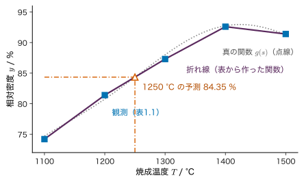
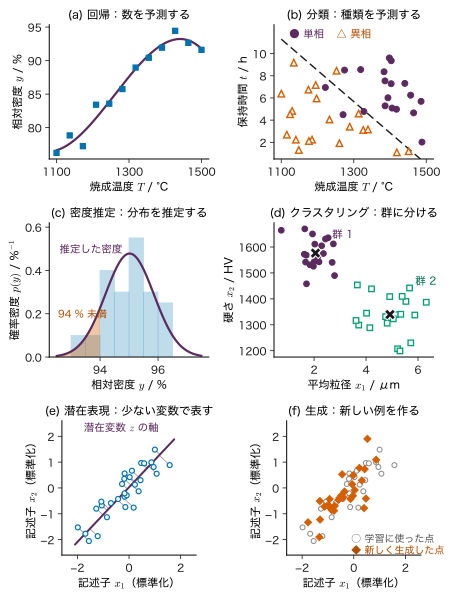
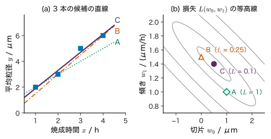
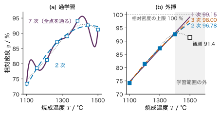

第1章機械学習とは何か — データから規則を学ぶ
- 規則を人が書く代わりに「データから学ぶ」とは，具体的に何を決め，何を小さくすることなのか．
- 焼成温度と相対密度の 5 組の測定値しかないとき，機械学習は 1250 °C の結果を予測できるか．1600 °C ならどうか．
- 機械学習は材料研究のどの仕事を引き受けられ，どの仕事を引き受けられないのか．
アルミナの粉末を成形して焼くと，焼成温度が高いほど緻密になる．実験記録に，1100 °C から 1500 °C まで 100 °C おきに焼いた 5 個の試料の相対密度が書いてあるとしよう．この 5 組の数値から「温度を入れると密度が出てくる関数」を作れれば，まだ焼いていない 1250 °C の結果をある程度は言い当てられる．焼結の理論から式を立てる道もあるが，理論が複雑すぎたり，効いている要因がよく分からなかったりする場面は多い．そのようなとき，数値の組から関数を作るという仕事を，決まった手順で計算機に任せるのが機械学習（machine learning）である．
本章は本書全体の入口である．まず，機械学習が引き受ける仕事を回帰・分類・密度推定・潜在表現・生成の五つに分け，それぞれの入力・出力・学ぶものを小さな数値例と図で見る．次に，モデル・パラメーター・損失・学習・予測という共通の言葉を，4 点に直線を当てはめる手計算で定める．そのうえで本書の三つの柱（ベイズ推定・ベイズ最適化・ニューラルネットワーク）の関係，材料データの特徴，うまくいかない典型（過学習・データ漏洩・外挿）を予告し，最後に本書の地図と二つの読み方を示す．式は少なめにしてあるが，1.4 節の計算だけは手を動かして追ってほしい．
- 「データから学ぶ」とは，モデルの形を決め，損失を最小にするパラメーターを求め，それで新しい入力の出力を予測することだと説明できる．
- 材料の課題を，回帰・分類・密度推定・潜在表現（クラスタリング・次元削減）・生成のどれに当たるかに分けられる．
- 教師あり学習・教師なし学習・自己教師あり学習の違いを，データにラベルが付いているかどうかで説明できる．
- 直線モデルの二乗和の損失を手で計算し，損失を最小にする切片と傾きを 2 元連立 1 次方程式から求められる．
- ベイズ推定・ベイズ最適化・ニューラルネットワークの役割の違いを一言で言える．
- 過学習・データ漏洩・外挿が何を意味するかを，小さな数値例で説明できる．
入門ルートで読む節：1.1，1.2，1.3，1.4，1.5，1.6，1.7，1.8，1.11．「詳しいルート」の印が付いた節は，初めて読むときは飛ばしてよい．
1.1 規則を書く代わりにデータから学ぶ
1.1.1 二つのやり方
計算機に仕事をさせる昔ながらのやり方は，人が規則を書くことである．「焼成温度が 1300 °C 以上なら合格」「ピークの位置が 2θ = 25.3° 付近にあればアナターゼ」のように，入力から出力を決める手順を人が考えてプログラムにする．規則がはっきりしていれば，これがいちばん確実である．
ところが，材料の性質のように多くの要因が絡み合う対象では，正しい規則を人が書き下せないことが多い．そこで発想を逆にする．入力と出力の組をたくさん集め（データ），その組をなるべくよく再現する関数を計算機に探させる．探す範囲（関数の形）と，「よく再現する」の物差し（損失）は人が決めるが，具体的な係数はデータから決まる．これがデータから学ぶということであり，できあがった関数をモデル（model），係数を決める作業を学習（learning，訓練 training とも）という（図1.1）．
1.1.2 5 組の表から関数を作る
具体的な数値で考える．表1.1 は，焼成温度 $T$ を変えて焼いた 5 個の試料の相対密度 $y$（理論密度に対する百分率）である．これは実在の測定値ではなく，本書で繰り返し使う教育用の合成データ「データ A」から作った．データ A では，温度を $s=(T-1300\ ^{\circ}\mathrm{C})/(200\ ^{\circ}\mathrm{C})$ と規格化し（$T=1100$〜$1500$ °C が $s=-1$〜$1$ に対応する），真の関数
\begin{equation} \begin{aligned} g(s)&=88+8s-5s^{2}\\ &\quad+2\sin 3s\quad(\%) \end{aligned} \label{eq:1-dataA} \end{equation}に，平均 0・標準偏差 1.0 % の Gauss 分布に従う誤差を足して観測値を作る（$\sin$ の引数はラジアン）．表1.1 は $s=-1,-0.5,0,0.5,1$ の 5 点で，乱数は Python の numpy.random.default_rng(20261116) で発生させ，値を 0.1 % に丸めた．真の関数を知っているのは作った側だけで，学ぶ側は表の 5 組しか見られない，という設定である．
| 試料 | 焼成温度 $T$ / °C | 規格化した温度 $s$ | 相対密度 $y$ / % | （参考）真の値 $g(s)$ / % |
|---|---|---|---|---|
| 1 | 1100 | $-1.0$ | 74.2 | 74.72 |
| 2 | 1200 | $-0.5$ | 81.4 | 80.76 |
| 3 | 1300 | $0.0$ | 87.3 | 88.00 |
| 4 | 1400 | $0.5$ | 92.6 | 92.75 |
| 5 | 1500 | $1.0$ | 91.4 | 91.28 |
この表から「温度を入れると密度が出てくる関数」を作る最も素朴な方法は，隣り合う点を直線で結ぶこと（線形補間）である（図1.2）．これでも立派な「データから作った関数」であり，表にない 1250 °C の値を答えられる．一方，作り方を決めたのは人であり（「隣どうしを直線で結ぶ」），その作り方には仮定が入っている（「隣の点の間で密度は直線的に変わる」）．機械学習のどの手法も，この二つ — 関数の作り方と，それに含まれる仮定 — を持っている．以後の章で手法を学ぶときは，いつも「何を仮定しているか」を問うてほしい．

例題1.1 表から 1250 °C の相対密度を予測する
表1.1 の隣り合う 2 点を直線で結ぶ方法で，(1) 1250 °C，(2) 1450 °C の相対密度を予測せよ．(3) 真の関数の値 $g(-0.25)$，$g(0.75)$ を式 \eqref{eq:1-dataA} から計算し，予測と比べよ．
解答 (1) 1250 °C は 1200 °C（81.4 %）と 1300 °C（87.3 %）のちょうど中間なので，
$$ \begin{aligned} \hat{y}(1250)&=81.4+(87.3-81.4)\\ &\quad\times\frac{1250-1200}{1300-1200}\\ &=81.4+5.9\times0.5=84.35\ \%. \end{aligned} $$(2) 同様に 1400 °C（92.6 %）と 1500 °C（91.4 %）の中間なので $\hat{y}(1450)=92.6+(91.4-92.6)\times0.5$ $=92.0\ \%$．
(3) $s=-0.25$ では $8s=-2$，$-5s^{2}=-0.3125$，$2\sin(-0.75)=2\times(-0.6816)=-1.3633$ なので $g(-0.25)=88-2-0.3125-1.3633$ $=84.32\ \%$．$s=0.75$ では $8s=6$，$-5s^{2}=-2.8125$，$2\sin 2.25=2\times0.7781=1.5562$ なので $g(0.75)=92.74\ \%$．
1250 °C の予測は真の値とほぼ一致した（差 0.03 %）．1450 °C は 0.74 % 低めに外れた．真の関数は 1400〜1500 °C の間で山を作っているのに，折れ線は 2 点を直線で結んでしまうからである．さらに，両端の観測値自体に誤差（標準偏差 1.0 %）が乗っているので，この程度の外れは避けられない．1250 °C の一致がよかったのは，誤差がたまたま打ち消し合った面もある．
この小さな例に，機械学習の要素がすべて顔を出している．データ（5 組），モデル（折れ線），予測（84.35 %），誤差（観測に乗るばらつき），そして仮定（点の間は直線）．ただし，折れ線は「データに合わせて係数を調整する」段階を持たない．1.4 節では，係数を損失の最小化で決める，本来の意味の学習を扱う．
1.2 機械学習の五つの仕事 — 回帰・分類・密度推定・潜在表現・生成
1.2.1 仕事を入力と出力で分ける
機械学習の手法は数が多いが，引き受ける仕事で分けると見通しがよくなる．本書では次の五つに分ける（表1.2，図1.3）．
- 回帰（regression）：入力 $\bm{x}$ から連続な数値 $y$ を予測する．例：焼成温度から相対密度．
- 分類（classification）：入力 $\bm{x}$ から有限個の種類（クラス）のどれかを予測する．例：焼成条件から「単相か異相か」．
- 密度推定（density estimation）：データ $\bm{x}$ がどのような確率分布に従っているかを推定する．例：相対密度のばらつきの分布から，94 % 未満の不良品が出る割合を見積もる．
- 潜在表現（latent representation）：観測された多くの変数の背後にある，少数の見えない変数（潜在変数）を見つける．潜在変数が離散ならクラスタリング（clustering．データをいくつかの群に分ける），連続なら次元削減（dimensionality reduction．少ない変数で表す）になる．
- 生成（generation）：学んだ分布から新しい例を作り出す．例：既知の材料の組成の分布を学び，それらしい新しい組成を提案する．文章を 1 語ずつ作る GPT もこの仕事をしている．
回帰と分類はどちらも「入力から出力を予測する」仕事であり，出力が数値か種類かだけが違う．機械学習の実用の大半はこの二つであり，本書でも第8〜15章の中心になる．また，回帰も分類も，突き詰めれば「入力が与えられたときの出力の分布 $p(y\mid\bm{x})$ を推定する」ことと見なせる（第2章で条件付き分布を学ぶとこの意味が分かる）．つまり推定（分布や係数をデータから決めること）と分類は本書の二本の柱であり，残りの仕事もこの二つの上に組み立てられる．
| 仕事 | 入力 → 出力（学ぶもの） | 材料での例 |
|---|---|---|
| 回帰（第8・12・14章） | $\bm{x}$ → 数値 $y$（関数 $f(\bm{x};\bm{w})$） | 焼成温度 → 相対密度，組成 → バンドギャップ |
| 分類（第9〜11・14章） | $\bm{x}$ → クラス（決定境界，クラスの確率） | 焼成条件 → 単相／異相，組織写真 → 欠陥あり／なし |
| 密度推定（第3・4・17章） | なし → 分布 $p(\bm{x})$（分布の形とパラメーター） | 強度のばらつき → 破壊確率，相対密度 → 不良率 |
| 潜在表現（第17・18章） | 多変数の $\bm{x}$ → 群の番号，少数の座標 $\bm{z}$（群の中心，主な方向） | XRD パターンの群分け，多数の記述子の要約 |
| 生成（第21・26章） | なし（または条件）→ 新しい $\bm{x}$（分布と，そこから引く手順） | それらしい組成・構造の候補，文章 |

| パネル | データと seed | 学習の結果 |
|---|---|---|
| (a) | データ A（式 \eqref{eq:1-dataA}），等間隔 12 点，誤差の標準偏差 1.0 %．seed 20261103 | 3 次多項式を最小二乗で当てはめた |
| (b) | $T$ を $[1100,1500]$ °C，$t$ を $[1,10]$ h の一様乱数で 40 点．$u_1=(T-1300)/200$，$u_2=(t-5.5)/4.5$ とし，単相になる確率 $1/\{1+\exp[-4(u_1+u_2)]\}$ で乱数のラベルを付けた．seed 20261104 | ロジスティック回帰（第9章）の直線の境界．訓練データの正解率 36/40 |
| (c) | 相対密度 40 個，平均 95.0 %・標準偏差 0.8 % の Gauss 分布．seed 20261105 | 平均 95.02 %・標準偏差 0.835 % と推定．94 % 未満の確率 0.111（実際は 4/40） |
| (d) | 2 群×20 点．群 1：粒径 2.0±0.5 μm，硬さ 1600±60 HV．群 2：粒径 5.0±0.7 μm，硬さ 1350±70 HV（±は Gauss 分布の標準偏差）．seed 20261106 | 標準化してから k-means（$K=2$．第17章）．中心は (2.05 μm, 1577 HV) と (4.92 μm, 1340 HV) |
| (e) | 標準化した 2 つの記述子，30 点，平均 0・分散 1・相関係数 0.85 の 2 変量 Gauss 分布．seed 20261107 | 主成分分析（第18章）．1 本の軸で全分散の 93.7 % を説明 |
| (f) | (e) の 30 点から推定した 2 変量 Gauss 分布から新しく 30 点．seed 20261108 | — |
図1.3 の (c) と (f) を見比べると，密度推定と生成の関係が分かる．(c) では分布を推定し，その分布で「94 % 未満になる確率は 0.111」のように確率を計算した．(f) では推定した分布から標本を引いて新しい点を作った．分布が分かれば生成ができ，生成がうまくできることは分布をよく学んだことの一つの証拠になる．ただし，推定した分布が単純すぎる（ここでは Gauss 分布）と，生成される点も単純になる．大規模言語モデルは，この「分布」を文章という極めて複雑な対象について学んだものである（第26章）．
(d) と (e) は，どちらもラベルのない点の集まりから構造を見つけている．(d) は「点は 2 つの群のどちらかから来た」という離散の潜在変数，(e) は「2 つの記述子はほぼ 1 つの量 $z$ で決まっている」という連続の潜在変数を仮定した．どちらも出力は「データの見方」であり，正解と照合して評価することが難しい点が回帰・分類と違う．
例題1.2 材料の課題を五つの仕事に分ける
次の (1)〜(6) は，回帰・分類・密度推定・潜在表現（クラスタリングか次元削減か）・生成のどれに当たるか．入力と出力も書け．
(1) 合金の組成（各元素の割合）から降伏強さ（MPa）を予測する．
(2) 走査電子顕微鏡の組織写真から，その試料に割れがあるかないかを判定する．
(3) 同じ条件で作った 30 本の試験片の曲げ強度から，強度が 300 MPa を下回る確率を見積もる．
(4) 500 個の試料の XRD パターンを，似たものどうしの群に分ける（群の数も種類も事前には分からない）．
(5) 1 試料あたり 2000 点の強度からなる XRD パターンを，2〜3 個の数で要約して散布図に描く．
(6) 既知の安定な酸化物の組成を学び，まだ報告のない，それらしい組成の候補を 100 個作る．
解答 (1) 回帰．入力は組成のベクトル，出力は数値（降伏強さ）．(2) 分類．入力は画像（画素の値を並べたベクトル），出力は 2 クラス（割れあり／なし）．(3) 密度推定．入力はなく，30 個の強度の値から強度の分布 $p(\text{強度})$ を推定し，300 MPa 以下の面積を計算する（セラミックスでは Weibull 分布がよく使われる．第3章）．(4) 潜在表現のうちクラスタリング．出力は各試料の群の番号．正解のラベルは与えられていない．(5) 潜在表現のうち次元削減．2000 次元のベクトルを 2〜3 次元の座標 $\bm{z}$ に写す．(6) 生成．組成の分布を学び，そこから新しい組成を引く．ただし生成した候補が本当に安定かは，計算や実験で別に確かめる必要がある．
1.3 教師あり学習・教師なし学習・自己教師あり学習
1.3.1 ラベルがあるか，ないか，データから作るか
1.2 節の五つの仕事は「何を出力するか」による分け方だった．もう一つの分け方は，学習に使うデータにどんな情報が付いているかによる（図1.4）．
- 教師あり学習（supervised learning）：入力 $\bm{x}_n$ と，それに対する正しい出力（目標値，教師信号，ラベル）$y_n$ の組 $\{(\bm{x}_n,y_n)\}_{n=1}^{N}$ から学ぶ．回帰と分類がこれに当たる．ラベルを付けるには，試料を作って測る・専門家が判定するなどの手間がかかる．
- 教師なし学習（unsupervised learning）：入力 $\bm{x}_n$ だけの集まり $\{\bm{x}_n\}_{n=1}^{N}$ から，その分布や構造を学ぶ．密度推定・クラスタリング・次元削減がこれに当たる．
- 自己教師あり学習（self-supervised learning）：ラベルのないデータから，データ自身の一部を目標値として切り出し，教師あり学習の形に直して学ぶ．たとえば文章の途中までを入力，次の単語を目標値にする．人がラベルを付けなくても，文章が手に入るだけ大量の「入力と目標値の組」が作れる．
自己教師あり学習は，形式の上では教師あり学習（次の語を当てる分類）だが，ラベルを外から与えない点で教師なし学習の性格を持つ．GPT の事前学習（pre-training）はまさにこれで，膨大な文章について「それまでの語の並びから次の語を当てる」ことを繰り返す（第26章）．確率の言葉で書くと，文章全体の確率を「次の語の条件付き確率」の積に分解していることになる．この分解は第2章 2.2 節の乗法定理から直ちに出る．
四つ目の型として強化学習（reinforcement learning）がある．学習する主体（エージェント）が環境の中で行動を選び，その結果として得られる報酬を手がかりに，試行錯誤で行動の選び方を改善する．正解の行動は与えられず，報酬は遅れて届くこともある点が教師あり学習と違う．ロボットの制御やゲームで成果を上げた枠組みで，大規模言語モデルの調整にも使われるが，本書では扱わない（入門書として Sutton と Barto の教科書がある）．
例題1.3 1 つの文から作れる学習の組
語に区切った文「粉末／を／焼く／と／縮む」（5 語）がある．(1) 「それまでの語の並びから次の語を当てる」形の自己教師あり学習では，この文から何組の（入力，目標値）が作れるか．すべて書き出せ．(2) 平均 40 語の文が 10000 文あると，組は何組になるか．(3) これと同じ数の組を，焼結体の相対密度の測定（1 組＝1 試料）で教師あり学習用に集めるとすると，何が問題になるか．
解答 (1) 最初の語には前の語がないので，目標値になれるのは 2 語目以降の 4 語である．組は 4 組：（粉末 → を），（粉末 を → 焼く），（粉末 を 焼く → と），（粉末 を 焼く と → 縮む）．一般に $T$ 語の文からは $T-1$ 組が作れる．
(2) 1 文あたり $40-1=39$ 組なので，$39\times10000=390000$ 組．
(3) 39 万個の試料を焼いて測ることになり，時間と費用の面で現実的でない．材料のデータで「測った値」をラベルにする教師あり学習は，数十〜数千組で行うことが多い（1.6 節）．自己教師あり学習の強みは，ラベルを人や実験が用意しなくてよい点にある．
1.4 モデル・パラメーター・損失・学習・予測 — 4 点に直線を当てはめる
1.4.1 小さな例
本来の意味の学習を，手で追える大きさの例で行う．ある粉末を一定の温度で焼き，焼成時間 $x$（h）を変えて平均粒径 $y$（μm）を測ったところ，次の 4 組を得たとする（教育用の数値例．手計算しやすいように値を整数にした）．
| $n$ | 1 | 2 | 3 | 4 |
|---|---|---|---|---|
| 焼成時間 $x_n$ / h | 1 | 2 | 3 | 4 |
| 平均粒径 $y_n$ / μm | 2 | 3 | 5 | 6 |
点はおおよそ右上がりの直線に並んでいる．そこで「平均粒径は焼成時間の 1 次関数で表せる」と仮定し，その中で 4 点に最もよく合う直線を探す．以下，この作業に登場する言葉を一つずつ定義する．
1.4.2 定義と記号
定義1.1 データ・モデル・パラメーター
データ（data）を $\data=\{(x_n,y_n)\}_{n=1}^{N}$ と書く．$x_n$ は $n$ 番目の入力，$y_n$ はそれに対する目標値（観測された出力），$N$ はデータ数である．入力が複数の量からなるときは列ベクトル $\bm{x}_n\in\R^{D}$（$D$ 個の実数を縦に並べたもの）と書く．
入力から出力を計算する関数をモデルといい，$f(x;\bm{w})$ と書く．セミコロンの右の $\bm{w}$ はモデルの形を決める数の組で，パラメーター（parameter．重み weight とも）という．本節の直線モデルは
\begin{equation} \begin{aligned} f(x;\bm{w})&=w_0+w_1x,\\ \bm{w}&=\begin{pmatrix}w_0\\ w_1\end{pmatrix}\in\R^{2} \end{aligned} \label{eq:1-model} \end{equation}で，$w_0$（切片．単位 μm）と $w_1$（傾き．単位 μm/h）の 2 つがパラメーターである．モデルが入力 $x$ に対して出す値を予測値といい，$\hat{y}=f(x;\bm{w})$ と書く（ハット記号は「推定した値」の印）．
次に，直線の「よさ」を測る物差しを決める．予測値と目標値の差 $y_n-f(x_n;\bm{w})$ を残差（residual）という．残差は正にも負にもなるので，そのまま足すと打ち消し合う．そこで 2 乗して足す．
定義1.2 損失関数と学習
パラメーター $\bm{w}$ の悪さを 1 つの数で表す関数を損失関数（loss function）といい，$L(\bm{w})$ と書く．本節では二乗和の損失
\begin{equation} L(\bm{w})=\frac12\sum_{n=1}^{N}\bigl(y_n-f(x_n;\bm{w})\bigr)^{2} \label{eq:1-loss} \end{equation}を使う（単位は μm$^{2}$）．$\tfrac12$ は微分したときに係数 2 と打ち消し合うように付けた約束で，最小になる $\bm{w}$ の位置は変えない．データ $\data$ が与えられたもとで $L(\bm{w})$ を最小にするパラメーター
\begin{equation} \hat{\bm{w}}=\argmin_{\bm{w}}L(\bm{w}) \label{eq:1-learn} \end{equation}を求めることを学習という（$\argmin_{\bm{w}}$ は「右の式を最小にする $\bm{w}$」の意味）．学習で得たモデル $f(x;\hat{\bm{w}})$ を新しい入力 $x$ に使って $\hat{y}$ を出すことを予測（prediction）または推論という．
まとめると，人が決めるのはモデルの形（式 \eqref{eq:1-model}）と損失の形（式 \eqref{eq:1-loss}）であり，データが決めるのはパラメーターの値（式 \eqref{eq:1-learn}）である．1.1 節の「仮定」は，この二つの選択の中に入っている．直線を選べば「粒径は時間に比例して増える」と仮定したことになり，二乗和を選べば「大きな外れを特に重く罰する」と決めたことになる．
1.4.3 3 本の候補の損失を手で計算する
例題1.4 損失の手計算と，損失を最小にする直線
表1.4 の 4 点について，(1) 3 本の候補 A：$(w_0,w_1)=(1,\ 1)$，B：$(0,\ 1.5)$，C：$(0.5,\ 1.4)$ の損失 \eqref{eq:1-loss} を計算せよ．(2) 損失を最小にする $(w_0,w_1)$ を求めよ．(3) 学習した直線で焼成時間 5 h の平均粒径を予測せよ．
解答 (1) 各点の予測値 $\hat{y}_n=w_0+w_1x_n$ と残差 $y_n-\hat{y}_n$ を表にする．
| 候補 | $\hat{y}_1,\hat{y}_2,\hat{y}_3,\hat{y}_4$ | 残差 | 残差の 2 乗の和 | $L$ |
|---|---|---|---|---|
| A $(1,1)$ | 2, 3, 4, 5 | 0, 0, 1, 1 | $0+0+1+1=2$ | 1 |
| B $(0,1.5)$ | 1.5, 3, 4.5, 6 | 0.5, 0, 0.5, 0 | $0.25+0+0.25+0=0.5$ | 0.25 |
| C $(0.5,1.4)$ | 1.9, 3.3, 4.7, 6.1 | 0.1, −0.3, 0.3, −0.1 | $0.01+0.09+0.09+0.01=0.2$ | 0.1 |
損失は A，B，C の順に小さくなり，3 本の中では C が最もよい（単位はいずれも μm$^{2}$）．
(2) 候補を試すだけでは，C より良い直線がないとは言えない．そこで $L$ を $w_0,w_1$ の関数とみて，最小の点で偏微分が 0 になる条件を使う（$L$ は $w_0,w_1$ の 2 次式で，下に凸なお椀の形をしているので，偏微分が 0 の点がただ 1 つの最小点になる．凸性は第7章で扱う）．式 \eqref{eq:1-loss} に式 \eqref{eq:1-model} を入れ，合成関数の微分（外側の 2 乗の微分 × 内側の微分）を使う．内側 $y_n-w_0-w_1x_n$ を $w_0$ で微分すると $-1$，$w_1$ で微分すると $-x_n$ なので，
$$ \begin{aligned} \pdiff{L}{w_0}&=\frac12\sum_{n=1}^{N}2\,(y_n-w_0-w_1x_n)\times(-1)\\ &=-\sum_{n=1}^{N}(y_n-w_0-w_1x_n),\\ \pdiff{L}{w_1}&=\frac12\sum_{n=1}^{N}2\,(y_n-w_0-w_1x_n)\times(-x_n)\\ &=-\sum_{n=1}^{N}x_n(y_n-w_0-w_1x_n). \end{aligned} $$これらを 0 とおき，和を項ごとに分けて $w_0,w_1$ の項を左辺に移すと，
\begin{equation} \begin{aligned} &N\,w_0+\Bigl(\sum_n x_n\Bigr)w_1\\ &\qquad=\sum_n y_n,\\ &\Bigl(\sum_n x_n\Bigr)w_0+\Bigl(\sum_n x_n^{2}\Bigr)w_1\\ &\qquad=\sum_n x_ny_n \end{aligned} \label{eq:1-normal} \end{equation}という 2 元連立 1 次方程式になる．表の値から $N=4$，$\sum x_n=1+2+3+4=10$，$\sum x_n^{2}=1+4+9+16=30$，$\sum y_n=2+3+5+6=16$，$\sum x_ny_n=2+6+15+24=47$ なので，
$$ 4w_0+10w_1=16,\qquad 10w_0+30w_1=47. $$1 式目から $w_0=4-2.5w_1$．これを 2 式目に入れると $10(4-2.5w_1)+30w_1=47$，すなわち $40+5w_1=47$ なので $w_1=1.4$，$w_0=4-2.5\times1.4=0.5$．よって $\hat{\bm{w}}=(0.5,\ 1.4)$ で，候補 C がちょうど最小点だった．最小の損失は $L(\hat{\bm{w}})=0.1\ \mu\mathrm{m}^{2}$ である．
(3) $\hat{y}=0.5+1.4\times5=7.5\ \mu\mathrm{m}$．ただし 5 h は学習に使った範囲（1〜4 h）の外であり，この予測は「粒成長が同じ速さで続く」という仮定に頼っている（1.7 節）．
図1.5 の (b) は，損失 $L$ を $(w_0,w_1)$ の平面上の等高線で描いたものである．学習とは，この「損失の地形」の最も低い点を探すことに当たる．ここではパラメーターが 2 個で，地形はなめらかなお椀なので，連立方程式 \eqref{eq:1-normal} 一発で底が求まった．ニューラルネットワークではパラメーターが何万〜何億個もあり，地形も複雑なので，勾配（偏微分を並べたベクトル）をたどって少しずつ下る勾配降下法を使う（第7章）．

連立方程式 \eqref{eq:1-normal} は，正規方程式（normal equation）と呼ばれる式の 2 パラメーター版である．パラメーターが $M$ 個のときの一般形 $\bm{\Phi}^{\tp}\bm{\Phi}\bm{w}=\bm{\Phi}^{\tp}\bm{y}$ とその幾何学的な意味は第8章 8.2 節で導く．本章で覚えておくのは，次の 3 段の流れである．
1.5 本書の三つの柱 — ベイズ推定・ベイズ最適化・ニューラルネットワーク
1.5.1 三つの問い
1.4 節の学習は，損失を最小にする1 組のパラメーターを求めて終わった．しかし，4 点しかないデータで決めた傾き $1.4\ \mu\mathrm{m/h}$ はどれくらい確かなのか．5 点目を測るとしたら，どの焼成時間を選ぶのが得か．直線では表せない複雑な関係はどう学ぶのか．本書は，この三つの問いに答える三つの道具を柱にしている（図1.6）．
- ベイズ推定（Bayesian inference）：パラメーターや予測の分からなさを確率分布で表す．「傾きは 1.4」ではなく「傾きは 1.4 の付近にあり，その幅はこれくらい」と答える．データが少ないほど幅が広くなる．第2章の Bayes の定理を土台に，第4章（成功率・平均の推定），第8章（ベイズ線形回帰），第12章（ガウス過程回帰）で扱う．
- ベイズ最適化（Bayesian optimization）：ベイズ推定で得た予測の平均と幅を使って，次にどこを測るかを決める．予測が良さそうな所（活用）と，まだよく分からない所（探索）の兼ね合いをとる．第13章で扱う．
- ニューラルネットワーク（neural network）：多数のパラメーターを持つ柔軟な関数を，大量のデータから学習する．1.4 節の直線の代わりに，形を自由に変えられる関数を使うと考えればよい．第14〜15章で仕組みを学び，第22〜26章で文章を扱う GPT へつなげる．
名前が似ているが，ベイズ推定は「データから分布を求める」方法であり，ベイズ最適化は「その分布を使って実験の順番を決める」方法である．後者は前者を部品として使う．ニューラルネットワークは関数の形の選び方で，ベイズ推定とも組み合わせられる（重みに分布を置く）．
1.5.2 ベイズ最適化の考え方を数値で見る
ベイズ最適化の中身は第12・13章で学ぶが，「平均と幅の両方を使って次の測定を選ぶ」という考え方は，簡単な数値で味わえる．ある固体電解質に添加物を加え，イオン伝導度 $\sigma_{\mathrm{ion}}$ を最大にしたいとする．目的の量を $y=\log_{10}(\sigma_{\mathrm{ion}}/\mathrm{S\,cm^{-1}})$（常用対数をとった無次元の数）とする．すでに何点か測ったあと，ベイズ推定のモデルが，まだ測っていない添加量 $x$ について予測の平均 $\mu_*(x)$ と予測の標準偏差 $\sigma_*(x)$（予測の幅．大きいほど分からない）を出したとする．次の測定点を選ぶ規則の一つが
\begin{equation} \mathrm{UCB}(x)=\mu_*(x)+\kappa\,\sigma_*(x) \label{eq:1-ucb} \end{equation}を最大にする $x$ を選ぶことである（UCB は upper confidence bound の略）．$\kappa\ge0$ は「分からなさをどれだけ買うか」を決める定数で，$\kappa=0$ なら平均だけを見る．
例題1.5 次にどの添加量を測るか
3 つの候補の添加量について，モデルが次の予測を出した（教育用の数値．真の関係は本書の「データ C」と同じ形を想定しているが，表の $\mu_*$，$\sigma_*$ はガウス過程などで計算した値ではなく，説明のために置いた値である．ここでは予測の値だけを使う）．
| 添加量 $x$ / mol% | 予測の平均 $\mu_*$ | 予測の標準偏差 $\sigma_*$ |
|---|---|---|
| 2.2 | $-4.00$ | 0.05 |
| 6.0 | $-4.20$ | 0.40 |
| 9.0 | $-4.70$ | 0.30 |
(1) $\kappa=0$，(2) $\kappa=2$ のとき，式 \eqref{eq:1-ucb} の値を最大にする候補はどれか．(3) 2 つの選び方の違いを，言葉で説明せよ．
解答 (1) $\kappa=0$ では UCB は平均そのもので，$-4.00$，$-4.20$，$-4.70$．最大は $x=2.2$ mol%．
(2) $\kappa=2$ では，$x=2.2$：$-4.00+2\times0.05=-3.90$．$x=6.0$：$-4.20+2\times0.40=-3.40$．$x=9.0$：$-4.70+2\times0.30=-4.10$．最大は $x=6.0$ mol%．
(3) $\kappa=0$ は「今いちばん良さそうな所」を測る（活用）．$x=2.2$ はすでによく分かっている（幅 0.05）ので，測っても新しく学ぶことは少ない．$\kappa=2$ は「平均はやや低いが，分からなさが大きく，実はもっと良いかもしれない所」を測る（探索）．データ C のように，近くの小さな山（$x\approx2.2$）の奥に大きな山（$x\approx7.0$）が隠れている場合，活用だけでは小さな山に留まり続ける危険がある．どちらを選ぶべきかは $\kappa$ の値，つまり探索と活用の兼ね合いで決まる（第13章）．
ベイズ推定の側の最も簡単な例も一つ挙げておく．3 個の試料を焼いて 3 個とも合格したとき，合格率を「3/3 = 100 %」と答えるのは言い過ぎだろう．合格率 $\mu$ について「0 から 1 のどの値も同じくらいありうる」という事前の知識から出発してベイズ推定を行うと，合格率の分布の平均は $4/5=0.8$ になり，100 % ではない（第4章 4.4 節で導く）．データが少ないうちは，推定に「どれだけ確かか」を添えることが大切である．
1.6 材料の組成・構造・製造条件から性質を予測する
1.6.1 プロセス–構造–特性–性能の連鎖
材料工学では，材料をプロセス（製造条件：原料，焼成温度・時間，雰囲気，冷却速度など）→ 構造（結晶構造，相，粒径，気孔，欠陥）→ 特性（密度，強度，伝導度，バンドギャップなど）→ 性能（部品としての寿命や効率）の連鎖として捉えることが多い（図1.7）．各矢印の背後には物理と化学の法則（拡散，相平衡，電子構造など）があるが，連鎖全体を第一原理から計算し尽くせることはまれである．
機械学習は，この連鎖のどこか（あるいは全体）を，データから学んだ関数で近道する道具として使われる．たとえば「焼成温度 → 相対密度」（1.1 節）はプロセスから特性への近道であり，「組成 → バンドギャップ」は構造（組成）から特性への近道である．ただし近道は仕組みを説明しない．学んだ関数がなぜその形なのかは，別に物理で考える必要がある（1.10 節）．
1.6.2 記述子 — 材料を数値の組にする
定義1.3 記述子（特徴量）
モデルの入力に使うために，材料や試料を数値の組 $\bm{x}=(x_1,\dots,x_D)^{\tp}\in\R^{D}$ に直したものを記述子（descriptor．機械学習の一般的な用語では特徴量 feature）という．$\tp$ は転置（横に並べたものを縦にする）を表し，$\bm{x}$ は列ベクトルである．
記述子の例を挙げる．(i) 製造条件：焼成温度（°C），保持時間（h），添加量（mol%）．(ii) 組成：各元素の割合，あるいは元素の性質（原子半径，電気陰性度など）を組成で重み付けして平均した値．(iii) 構造：格子定数，配位数，粒径，XRD パターンの強度．(iv) 計算した量：第一原理計算で得たエネルギーや状態密度の特徴．どれを選ぶかで，モデルが表せる関係が決まる．良い記述子は，(a) 予測したい性質と関係があり，(b) 予測したい試料について予測の前に手に入り（後で測る量を入力に入れると意味がない），(c) 同じ材料に同じ値を与える（原子の番号の付け方などで変わらない）ものである．
記述子の選び方が予測の良し悪しを大きく左右することを，本書の「データ B」で見てみる．データ B は，架空の混晶 $\mathrm{A}_{1-x}\mathrm{B}_{x}\mathrm{C}$ のバンドギャップ $E_g$ が組成 $x$ に対して
\begin{equation} \begin{aligned} E_g(x)&=(1-x)\,1.20+x\,2.40\\ &\quad-0.80\,x(1-x)\quad(\mathrm{eV}) \end{aligned} \label{eq:1-dataB} \end{equation}で決まるとした教育用の合成データである（実在の物質のデータではない）．第 1・2 項は両端の値を直線で結んだもので，第 3 項は直線からの下向きのずれ（bowing．弓なりの曲がり）を表す．
例題1.6 記述子を選べば線形モデルで表せる
(1) 式 \eqref{eq:1-dataB} を展開し，$E_g(x)=w_0+w_1x+w_2x^{2}$ の形に書け．(2) $x=0.5$ での $E_g$ と，両端を直線で結んだ値との差を求めよ．(3) 記述子として $x$ だけを使う直線モデル $w_0+w_1x$ と，$(x,\ x^{2})$ の 2 つを使うモデル $w_0+w_1x+w_2x^{2}$ のどちらが，データ B の真の関係を表せるか．
解答 (1) 各項を展開する．$(1-x)\times1.20=1.20-1.20x$，$x\times2.40=2.40x$，$-0.80\,x(1-x)=-0.80x+0.80x^{2}$．足し合わせて同じ次数の項をまとめると，
$$ \begin{aligned} E_g(x)&=1.20+(-1.20+2.40-0.80)\,x\\ &\quad+0.80\,x^{2}\\ &=1.20+0.40\,x+0.80\,x^{2}\ \ (\mathrm{eV}). \end{aligned} $$(2) $E_g(0.5)=1.20+0.40\times0.5+0.80\times0.25$ $=1.20+0.20+0.20=1.60\ \mathrm{eV}$．両端を結んだ直線は $1.20+1.20x$ なので $x=0.5$ で $1.80\ \mathrm{eV}$．差は $1.60-1.80=-0.20\ \mathrm{eV}$ で，これは第 3 項 $-0.80\times0.5\times0.5$ に等しい．
(3) $(x,\ x^{2})$ を使うモデルは，$w_0=1.20$，$w_1=0.40$，$w_2=0.80\ \mathrm{eV}$ とおけば真の関係とぴったり一致する．$x$ だけの直線は曲がりを表せない．どちらのモデルもパラメーター $\bm{w}$ について 1 次なので，1.4 節と同じ「連立 1 次方程式を解く」学習ができる．入力を適当に変換したもの（ここでは $x^{2}$）を記述子に加えて表現力を上げるこの考え方を基底関数といい，第8章 8.1 節で体系的に扱う．
1.6.3 材料データは少ない
画像認識や文章の学習では，数百万〜数十億の例が使われる．一方，材料の実験データでは，1 つの研究で集められる試料は数十〜数百個，多くても数千個ということが珍しくない．1 個の試料を作って測るのに，数時間から数週間かかるからである．第一原理計算のデータベースはもっと大きいが（1.9 節），それでも計算できる物質と性質には限りがある．データが少ないことから，材料分野の機械学習では次の点が特に重要になる．
- パラメーターの多すぎるモデルは過学習しやすい（1.7 節）．物理の知識を記述子やモデルの形に入れて，学ぶべきことを減らす．
- 予測に不確かさを添える．少ないデータから決めた予測は外れうるので，「どれだけ確かか」が判断に必要である（ベイズ推定）．
- 次の実験を賢く選ぶ．1 点のデータが高価なので，どこを測れば最も得るものが大きいかを考える価値がある（ベイズ最適化）．
本書がベイズ推定・ガウス過程・ベイズ最適化に多くの章を割くのは，この事情による．
1.7 うまくいかないとき — 過学習・データ漏洩・外挿
機械学習のモデルは，学習に使ったデータの上ではよく合って見えるのに，新しいデータでは外れることがある．典型的な原因は三つある．本体は第6章で扱うので，ここでは小さな例で顔を見ておく．
1.7.1 過学習 — 覚えすぎて外す
モデルの自由度（パラメーターの数）が多すぎると，データに乗った誤差まで再現しようとして，点と点の間で不自然に曲がった関数を学んでしまう．これを過学習（overfitting）という．図1.8(a) は，データ A から等間隔に 8 点を取り（seed 20261127），7 次多項式（パラメーター 8 個）と 2 次多項式（3 個）を最小二乗で当てはめたものである．7 次多項式は 8 点をすべて通るので，学習に使ったデータでの誤差は 0 である．しかし点の間では大きく振れる．
両者の良し悪しを測るには，学習に使っていない新しいデータで誤差を見る．同じデータ A から別に 200 点（seed 20262127．$s$ は一様乱数）を作り，予測との差の 2 乗平均の平方根（RMSE．root mean square error）を計算すると，7 次多項式は 2.90 %，2 次多項式は 1.25 % だった．学習データでの誤差（7 次は 0 %，2 次は 1.25 %）とは順位が逆転している．観測の誤差の標準偏差は 1.0 % なので，どんなモデルでも新しいデータの RMSE を 1.0 % より小さくはできない．2 次はそれに近く，7 次は遠い．学習データでの誤差が小さいことは，良いモデルであることを保証しない．これが第6章 6.1 節の「訓練誤差と汎化誤差」の主題である．

1.7.2 外挿 — 学んだ範囲の外
例題1.7 1400 °C までの 4 点から 1500 °C を予測する
表1.1 のうち試料 1〜4（1100〜1400 °C）だけを学習に使い，規格化した温度 $s$ の直線 $f(s;\bm{w})=w_0+w_1s$ を最小二乗で当てはめよ．それで 1500 °C（$s=1$）の相対密度を予測し，観測値 91.4 % と比べよ．
解答 4 点は $s=-1,-0.5,0,0.5$，$y=74.2,81.4,87.3,92.6$．正規方程式 \eqref{eq:1-normal} を解いてもよいが，平均からのずれで書くと計算が楽になる．$\bar{s}=(-1-0.5+0+0.5)/4=-0.25$，$\bar{y}=(74.2+81.4+87.3+92.6)/4=83.875$．平均からのずれは $s_n-\bar{s}=-0.75,-0.25,0.25,0.75$，$y_n-\bar{y}=-9.675,-2.475,3.425,8.725$．式 \eqref{eq:1-normal} の 1 式目を $N$ で割ると $w_0=\bar{y}-w_1\bar{s}$ となり，これを 2 式目に入れて整理すると傾きは
$$ w_1=\frac{\sum_n(s_n-\bar{s})(y_n-\bar{y})}{\sum_n(s_n-\bar{s})^{2}} $$と書ける（演習1.1 で確かめる）．分子は $(-0.75)(-9.675)$ $+(-0.25)(-2.475)$ $+(0.25)(3.425)$ $+(0.75)(8.725)$ $=7.25625+0.61875$ $+0.85625+6.54375$ $=15.275$，分母は $0.5625+0.0625$ $+0.0625+0.5625=1.25$ なので $w_1=15.275/1.25=12.22\ \%$（$s$ は無次元なので，傾きの単位も %）．切片は $w_0=83.875-12.22\times(-0.25)=86.93$．よって
$$ \hat{y}(s=1)=86.93+12.22=99.15\ \%. $$観測値 91.4 % より 7.75 % も高い．同じ 4 点に 2 次・3 次多項式を当てはめても予測は 96.78 %，98.00 % で，やはり大きく外れる（図1.8(b)）．1100〜1400 °C のデータには「1400 °C を過ぎると緻密化が頭打ちになる」という情報が含まれていないので，どの次数を選んでもその変化は学べない．さらに相対密度は 100 % を超えられないが，直線を延ばせばいずれ 100 % を超える．
学習に使ったデータの範囲の外で予測することを外挿（extrapolation），範囲の中で予測することを内挿（interpolation）という．機械学習のモデルは基本的に内挿の道具であり，外挿の予測には保証がない．材料の探索ではまさに「まだ誰も作っていない範囲」を予測したいことが多いので，この限界は特に重要である．どこまでが学習範囲か（適用領域）を意識し，外挿では予測に大きな不確かさを付けて扱う（第6章 6.9 節）．
1.7.3 データ漏洩 — 答えを見てしまう評価
モデルの良さは，学習に使っていないデータ（テストデータ）での誤差で評価する．このとき，テストデータの情報が何らかの形で学習に紛れ込むと，誤差が実際より小さく見積もられる．これをデータ漏洩（data leakage）という．材料データで起こりやすい例は次のとおりである．
- 同じ試料の繰り返し測定：1 個の試料を 3 回測った 3 行を，行ごとにランダムに学習用とテスト用に分けると，テストの行とほぼ同じ値の行が学習側にある．モデルは「覚えた値を返す」だけで良い成績を取れてしまう（演習1.7）．
- 前処理に全データを使う：記述子の標準化（平均を引いて標準偏差で割る）の平均と標準偏差を，テストデータも含めた全体で計算してしまう．
- 未来の情報：時間とともに改良された材料を予測するのに，後の年のデータで学習したモデルで前の年を「予測」する．
どれも，評価の数字が良くなる方向にしか働かないので気づきにくい．正しい手順（分けてから学習データだけで前処理を決める，同じ試料や同じ系統はまとめて分ける）は第6章 6.7 節で学ぶ．
1.8 本書の地図と二つの読み方
1.8.1 章の並びと依存関係
本書は 28 章と付録 4 つからなる（図1.9）．第I部で確率と推定の言葉を作り，第II部で学習を成り立たせる考え方（情報量，汎化，最適化）をそろえる．第III部は回帰・分類・カーネル法からガウス過程とベイズ最適化まで，第IV部はニューラルネットワーク，第V・VI部は潜在変数と近似推論である．第VII部で系列データから Attention，Transformer，GPT へ進み，第VIII部で材料科学・統計力学との接点と総合演習を置く．
1.8.2 入門ルートと詳しいルート
本書には二つの読み方を用意した．
- 入門ルート：機械学習から生成 AI までの仕組みを最短でつかむ読み方．各章の冒頭の「入門ルートで読む節」に挙げた節だけを読めば，第1章から第26章（GPT）まで前提が途切れないように書いてある．背骨となる章の順は 図1.9 のいちばん下に書いたとおりで，第3章は Gauss 分布まで，第13章は 13.1〜13.3 節（ベイズ最適化の考え方）だけを読む．
- 詳しいルート：すべての節を読む．入門ルートに含まれない節の見出しには「詳しいルート」の札を付けた．推定・推論・材料探索まで数式を追う．
どちらのルートでも，各章の最後の「まとめ・次章への接続・演習・参考文献」は読んでほしい．演習の解答は付録C にある．背骨から外れる章には枝がある．たとえば第10章（カーネル法）→ 第11章（サポートベクトルマシン），第4・3章 → 第17章（混合分布と EM 法）→ 第18章（主成分分析），第4・5章 → 第20章（近似推論）→ 第21章（サンプリング）である．
例題1.8 第12章（ガウス過程回帰）を読むための準備
ガウス過程回帰（第12章）は，第3章の多変量 Gauss 分布（3.6 節），第8章の線形回帰，第10章のカーネル法を前提にする．第8章は入門ルートの背骨の上にある．第12章にできるだけ早くたどり着くには，どの章（節）をどの順に読めばよいか．
解答 まず背骨に沿って第1章から第8章まで読む．このとき第3章だけは入門ルートの節に加えて 3.6 節（多変量 Gauss 分布．詳しいルート）も読む．第9章（線形識別）は第12章の直接の前提ではないので後回しにしてよい．次に第10章（カーネル法）を読み，それから第12章へ進む．順序は 1 → 2 → 3（3.6 節を含む）→ 4 → 5 → 6 → 7 → 8 → 10 → 12 である．第5章（情報量）と第7章（最適化）は第12章のハイパーパラメーターの決め方（周辺尤度の最大化．周辺尤度は証拠（エビデンス）とも呼ぶ）で使うので，飛ばさないほうがよい．
1.8.3 シミュレーターと合成データ
多くの章に，ブラウザーの中で動くシミュレーターを埋め込んだ（表1.5）．本文の囲みに，操作の手順，観察する点，対応する式の番号，操作後の問いを書いてあるので，式と計算結果を見比べながら手を動かしてほしい．大きな画面で使いたいときは「別ウィンドウで大きく開く」から開く．乱数は seed を指定して再現できる．何を計算しているか，入力の範囲，簡略化している点は付録D にまとめた．
| 装置 | 確かめること | 章 |
|---|---|---|
| S01 確率分布 | 分布の形と区間確率，標本平均の振る舞い（Gauss と Cauchy） | 3 |
| S02 ベイズ更新 | 観測のたびに事前分布が事後分布へ変わる様子 | 4 |
| S03 回帰と過学習 | 多項式の次数と正則化，バイアスと分散，ベイズ線形回帰 | 6，8 |
| S04 分類とカーネル | ロジスティック回帰，サポートベクトルマシン | 9〜11 |
| S05 ニューラルネットワーク | 順伝播・逆伝播の追跡，学習，勾配の確認 | 14，15 |
| S06 ガウス過程とベイズ最適化 | 予測の平均と幅，獲得関数による次の測定点の選択 | 12，13 |
| S07 潜在変数 | EM 法による混合分布の推定，主成分分析 | 17，18 |
| S08 近似推論と MCMC | 分布の近似，Metropolis–Hastings 法 | 20，21 |
| S09 系列モデル | 隠れ Markov モデル，Kalman フィルター | 22 |
| S10 Attention と次トークン生成 | Attention の重み，小さな言語モデルによる生成 | 24〜26 |
図・例題・シミュレーターで使うデータの多くは，生成の式と乱数の seed を明記した教育用の合成データである．全巻で使い回すものは次の三つで，本章でもすでに A と B を使った．いずれも実在の物質の測定値ではない．
- データ A「焼成温度と相対密度」（回帰・過学習）：式 \eqref{eq:1-dataA}，誤差の標準偏差 1.0 %．
- データ B「架空の混晶のバンドギャップ」（線形回帰と基底関数）：式 \eqref{eq:1-dataB}，誤差の標準偏差 0.03 eV．
- データ C「添加量とイオン伝導度」（ガウス過程・ベイズ最適化）：添加量 $x\in[0,10]$ mol% に対し $y=\log_{10}(\sigma_{\mathrm{ion}}/\mathrm{S\,cm^{-1}})$ が，$x\approx2.2$ に小さな山，$x\approx7.0$ に大きな山を持つ．誤差の標準偏差 0.05．式は第12章で示す．
1.8.4 必要な数学
前提は高校から大学初年の微積分・線形代数・確率の初歩である．足りないところは姉妹編の「大学数学」で補える（表1.6）．大学数学に載っていない事項（条件付き確率，Bayes の定理，分散・共分散，多変量 Gauss 分布，対称行列の対角化と特異値分解など）は，本書の第2・3章と付録A（A.3・A.4 節）で一から説明する．統計力学は前提にしない．関係を述べる箇所では，その場で必要なことを短く説明し，「大学基礎物理学」第VII部（たとえば第50章 50.1）へリンクする．
| 数学 | 大学数学の章 | 本書で主に使う章 |
|---|---|---|
| Taylor 展開 | 第4章 | 7，20 |
| 偏微分・連鎖律・Lagrange の未定乗数法 | 第6章 | 1，7，8，11，15 |
| 重積分・Gauss 積分 | 第7章 | 2，3 |
| 行列・連立 1 次方程式 | 第8章，第9章 | 8 以降のほぼ全章 |
| 固有値・対角化 | 第12章 | 3，7，18 |
| 確率・期待値の初歩 | 第13章，第14章 | 2 以降の全章 |
| 勾配 | 第18章 | 7，15 |
| ガンマ関数・ベータ関数 | 第32章 | 3，4 |
1.9 材料工学・物性物理学との接点 — マテリアルズインフォマティクスの現状詳しいルート
材料の研究に機械学習を使う分野はマテリアルズインフォマティクス（materials informatics）と呼ばれる．概観としては Butler らの総説（2018）と Ramprasad らの総説（2017）が読みやすい．ここでは，確認できる文献に基づいて 3 つの使い方を紹介し，それぞれが本章のどの言葉に当たるかを対応づける．どれも「何でも予測できる」ものではなく，適用できる範囲と前提がある．
応用：組成から物性を予測する（回帰・分類と記述子）
結晶の性質は，原子の種類と並び方（結晶構造）で決まる．構造がまだ分かっていない新しい組成についても性質を見積もりたいときは，組成だけから計算できる記述子を使う．Ward らは，元素の性質（原子番号，電気陰性度，原子半径など）について，組成で重み付けした平均・平均からのずれ・最大・最小などの統計量を記述子とし，無機結晶のバンドギャップや非晶質の作りやすさ（金属ガラスの形成能）を予測する汎用の枠組みを示した（Ward et al., 2016．バンドギャップには第一原理計算のデータベースの値を，ガラス形成能には実験の判定の集積を使っている）．これは本章の言葉では，記述子 $\bm{x}$（定義1.3）を決め，バンドギャップなら回帰，ガラスになるかならないかなら分類のモデル $f(\bm{x};\bm{w})$ を学習することに当たる．学習データには，高速な第一原理計算で多数の物質の性質を計算したデータベース（たとえば Materials Project．Jain et al., 2013）や実験値の集積が使われる．計算値で学んだモデルは計算の誤差の傾向も一緒に学ぶので，実験値との比較は別に必要である．
応用：原子間ポテンシャルを学習する（ニューラルネットワークによる回帰）
分子動力学法で原子の運動を計算するには，原子の位置 $\{\bm{r}_i\}$ からエネルギー $E$ と原子に働く力 $\bm{F}_i=-\partial E/\partial\bm{r}_i$ を求める関数（ポテンシャル）が要る．密度汎関数理論（DFT．電子の状態から全エネルギーを計算する第一原理計算の方法）は精度が高いが，原子数が増えると計算が急に重くなる．Behler と Parrinello は，各原子の周りの環境を数値の組で表し，ニューラルネットワークで原子ごとのエネルギーを出して足し合わせる形で DFT のエネルギー面を表現し，任意の大きさの系に使えることをケイ素で示した（Behler and Parrinello, 2007）．本章の言葉では，入力は原子の配置の記述子，出力は DFT のエネルギー（数値）なので回帰であり，モデルはニューラルネットワーク（1.5 節）である．学習した配置から遠い配置（たとえば高温で初めて現れる構造）は外挿（1.7 節）になるので，予測が信用できなくなる．統計力学との関係を含め第27章で扱う．
応用：次の実験を選ぶ（不確かさを使う能動学習・ベイズ最適化）
実験 1 回の費用が大きい材料開発では，代理のモデルの予測と不確かさを使って次に試す組成や条件を選び，少ない回数で目標に近づく方法が研究されている．Lookman らの総説（2019）は，このような能動学習・適応的な実験計画の考え方と材料への適用例をまとめている．本章の言葉では，1.5 節のベイズ推定で予測の平均と幅を出し，式 \eqref{eq:1-ucb} のような規則で次の測定点を選ぶことに当たる（第13章）．ただし，探索する範囲（組成や温度の上下限）と目的の量は人が決める．範囲の外に良い材料があっても見つからない．
例題1.9 条件の組み合わせの数と実験の回数
焼成温度を 1100〜1500 °C の 50 °C おき，保持時間を 1，2，4，6，8，10 h，添加量を 0〜10 mol% の 1 mol% おきに変えて相対密度を最大にしたい．(1) 条件の組み合わせは全部で何通りか．(2) 1 週間に 4 条件を試せるとすると，全部試すのに何週間かかるか．(3) 1.5 節の考え方で，予測と不確かさを使って次の条件を選びながら 40 回の実験で打ち切るとすると，何週間か．この方法で注意すべき点を 1 つ挙げよ．
解答 (1) 温度は $(1500-1100)/50+1=9$ 水準，時間は 6 水準，添加量は $10/1+1=11$ 水準なので，$9\times6\times11=594$ 通り．
(2) $594/4=148.5$ なので 149 週間（約 2.9 年）．
(3) $40/4=10$ 週間．注意点：40 回で最良の条件が見つかる保証はない．モデルの仮定（関数のなめらかさなど）が実際と大きく違えば，良い条件を見逃しうる．また，水準の刻み（たとえば温度を 50 °C おきにしたこと）の外にある最良の条件は，そもそも探索の対象に入っていない．
1.10 誤解しやすい点と適用限界詳しいルート
注意：「データがあれば何でも予測できる」わけではない
モデルが予測できるのは，学習データに含まれる情報で決まることだけである．1.7 節の例のように，1400 °C までのデータから 1500 °C での頭打ちは学べない．入力に含まれていない要因（原料のロット，炉の個体差，湿度）が結果を左右しているなら，どれほど柔軟なモデルでもその分は予測できず，誤差として残る．データの量を増やすより，何を入力に含めるか，どの範囲のデータを集めるかのほうが効くことが多い．
注意：「精度が高い」ことは「仕組みが分かった」ことではない
テストデータでの誤差が小さいモデルは，その範囲で予測に使えるという意味で役に立つ．しかし，学習したパラメーターの値が物理的な原因を表しているとは限らない．データの中で 2 つの記述子がいつも一緒に動いていれば，モデルはどちらが本当の原因かを区別できない（例題1.10）．因果関係を言うには，片方だけを変える実験（介入）か，物理の知識による裏付けが要る（第6章 6.11 節）．
注意：「AI が考えている」のではない
本書で扱うモデルはどれも，人が決めた形の関数 $f(\bm{x};\bm{w})$ と，人が決めた損失 $L(\bm{w})$ の最小化でできている．GPT のような大規模言語モデルも，第26章で見るように「それまでの語の並びから次の語の確率分布を出す関数」を大量の文章で学習したものである．出力が人の文章のように見えても，その文の内容が正しいかどうかを確かめる仕組みを関数自体は持っていない．機械学習の出力は，根拠を確かめるべき予測として扱い，「AI がそう判断した」を結論の根拠にしない．なお，特定の商用モデルの内部の構造や学習データについては，公表されていない事項が多い．本書では公開論文に書かれた仕組みに限って説明する．
注意：「機械学習」は特別な手法の名前ではない
1.4 節の直線の当てはめ（最小二乗法）は，19 世紀から使われてきた統計の方法である．それも損失の最小化によってデータから関数を学んでいるので，本書では機械学習の最も簡単な例として扱う．新しい手法が古い方法より常に優れているわけではない．データが少ない材料の問題では，物理に基づく単純なモデルのほうが，柔軟なモデルより正直な予測を出すことがよくある．
例題1.10 いつも一緒に動く 2 つの記述子
ある炉では，焼成温度の設定値 $x_1$ と，炉の別の設定値 $x_2$ が，これまでの運転ではいつも同じ値（規格化して $x_1=x_2$）になっていた．3 回の運転で $(x_1,x_2,y)=(0,0,1)$，$(1,1,3)$，$(2,2,5)$ を得た（教育用の数値例）．モデル $f(\bm{x};\bm{w})=w_0+w_1x_1+w_2x_2$ を考える．(1) 次の 3 組のパラメーターについて二乗和の損失 \eqref{eq:1-loss} を求めよ：P：$(w_0,w_1,w_2)=(1,2,0)$，Q：$(1,0,2)$，R：$(1,1,1)$．(2) 新しく $x_1=2$，$x_2=0$ で運転したときの予測を，P，Q，R のそれぞれで求めよ．(3) この結果から何が言えるか．
解答 (1) どの組でも予測は $w_0+(w_1+w_2)x$（$x=x_1=x_2$）となり，$w_1+w_2=2$ なので $1+2x$ である．3 点で $1,3,5$ となり観測と一致するので，P，Q，R の損失はどれも 0 である．
(2) P：$1+2\times2+0\times0=5$．Q：$1+0\times2+2\times0=1$．R：$1+1\times2+1\times0=3$．
(3) 学習データを完全に再現するパラメーターが無数にあり（$w_1+w_2=2$ を満たせばよい），データからはどれが正しいか決められない．それなのに，2 つの設定値を別々に動かした新しい条件では予測がまったく違う．「P のモデルが学習データに完全に合った」ことから「温度が原因で，もう一方の設定は効かない」と結論するのは誤りである．2 つを別々に変えた実験をしない限り，区別はつかない．この状況を多重共線性（multicollinearity）といい，第8章 8.11 節で数値計算の面からも扱う．
1.11 まとめ・次章への接続・演習・参考文献
1.11.1 まとめ
- データから学ぶ：人がモデルの形 $f(\bm{x};\bm{w})$ と損失 $L(\bm{w})$ を決め，データ $\data$ が損失を最小にするパラメーター $\hat{\bm{w}}$ を決める．学んだモデルで新しい入力の出力を出すのが予測である．どの手法も仮定を含む．
- 五つの仕事：回帰（数値を予測），分類（種類を予測），密度推定（分布を推定），潜在表現（クラスタリングと次元削減），生成（新しい例を作る）．回帰と分類が実用の中心で，どちらも入力が与えられたときの出力の分布の推定と見なせる．
- 学習の型：教師あり（入力と目標値の組），教師なし（入力だけ），自己教師あり（目標値をデータ自身から作る．GPT の事前学習）．強化学習は報酬による試行錯誤で，本書では扱わない．
- 直線の当てはめ：二乗和の損失の偏微分を 0 とおくと 2 元連立 1 次方程式（正規方程式）になり，表1.4 の 4 点では $\hat{w}_0=0.5\ \mu\mathrm{m}$，$\hat{w}_1=1.4\ \mu\mathrm{m/h}$．
- 三つの柱：ベイズ推定は分からなさを分布で表し，ベイズ最適化はそれを使って次の測定を選び，ニューラルネットワークは柔軟な関数を学ぶ．
- 材料データ：プロセス–構造–特性–性能の連鎖の近道として使う．記述子の選び方が結果を左右し，データが少ないので不確かさと実験計画が重要になる．
- うまくいかないとき：過学習（学習データでの誤差 0 でも新しいデータで外れる），データ漏洩（評価が楽観的になる），外挿（学習範囲の外では保証がない）．
1.11.2 次章への接続
本章では，観測値の誤差を「ばらつき」と言葉で扱い，予測の幅（1.5 節の $\sigma_*$）や 94 % 未満になる確率（図1.3(c)）を，確率の定義なしに使った．これらを正確に扱う言葉が確率である．次の第2章では，確率分布，同時分布と条件付き分布，Bayes の定理，期待値と分散，確率と尤度の違いを一から組み立てる．そこで学ぶ乗法定理は，本章の 1.3 節で予告した「文章を次の語の確率の積に分解する」ことの土台になり，Bayes の定理は 1.5 節のベイズ推定の土台になる．
1.11.3 演習問題
演習1.1 3 点への直線の当てはめ（計算・導出）
3 点 $(x_n,y_n)=(0,1),\ (1,2),\ (2,4)$ がある．(1) 直線 $f(x;\bm{w})=w_0+w_1x$ の候補 $(w_0,w_1)=(1,1)$ と $(0,2)$ について，損失 \eqref{eq:1-loss} を求めよ．(2) 正規方程式 \eqref{eq:1-normal} を立てて解き，損失を最小にする $(\hat{w}_0,\hat{w}_1)$ と最小の損失を求めよ．(3) 一般の $N$ 点について，正規方程式から $\hat{w}_0=\bar{y}-\hat{w}_1\bar{x}$ と $\hat{w}_1=\sum_n(x_n-\bar{x})(y_n-\bar{y})\big/\sum_n(x_n-\bar{x})^{2}$ を導け．ここで $\bar{x}=\frac1N\sum_n x_n$，$\bar{y}=\frac1N\sum_n y_n$ である．
ヒント：(3) は 1 式目を $N$ で割り，2 式目に代入する．$\sum_n(x_n-\bar{x})(y_n-\bar{y})=\sum_n x_ny_n-N\bar{x}\bar{y}$ を使う．
演習1.2 材料の課題を分類する（材料の題材）
次の課題は，回帰・分類・密度推定・潜在表現（クラスタリング／次元削減）・生成のどれに当たるか．また，教師あり・教師なし・自己教師ありのどれで学ぶのが自然か．理由も述べよ．
(1) 鋼の化学組成と熱処理条件から，焼入れ後の硬さ（HV）を予測する．
(2) 熱処理後の試料の光学顕微鏡写真を，マルテンサイト主体かフェライト主体かに分ける（専門家が判定した写真が 300 枚ある）．
(3) 結晶構造データベースの数十万件の構造を，ラベルなしで似た構造どうしの群に分ける．
(4) 材料の論文の要旨を大量に集め，文中のある語を隠してそれを当てる学習をしてから，その表現を物性の予測に流用する．
(5) ある工程で作ったコンデンサーの静電容量の測定値 2000 個から，規格外（±5 % の外）になる割合を見積もる．
ヒント：出力が何か（数値・種類・分布・群・新しい例）と，ラベルを誰が用意するかを考える．
演習1.3 3 点から延ばす（材料の題材）
表1.1 の試料 1〜3（1100，1200，1300 °C）だけを使い，規格化した温度 $s$ の直線を最小二乗で当てはめよ．それで 1400 °C と 1500 °C の相対密度を予測し，観測値（92.6 %，91.4 %）と比べよ．予測が 100 % を超える温度を求め，この予測の問題点を述べよ．
ヒント：演習1.1 (3) の式を使う．$\bar{s}=-0.5$ である．
演習1.4 自己教師あり学習の組の数（計算・考察）
(1) 長さがそれぞれ 6 語，9 語，12 語の 3 つの文から，「それまでの語の並びから次の語を当てる」形の（入力，目標値）の組は全部で何組作れるか．(2) モデルが一度に見られる語の数（文脈長）が 4 語までに制限されているとき，12 語の文の最後の語を当てる組の入力はどうなるか．組の数は変わるか．(3) この学習で目標値（次の語）は誰が用意したのか．教師あり学習・教師なし学習とそれぞれどこが同じで，どこが違うか．
ヒント：$T$ 語の文からは $T-1$ 組（例題1.3）．
演習1.5 二乗の損失と絶対値の損失（導出・考察）
同じ焼結体の相対密度を 5 回測り，95.1，95.4，94.8，95.2，89.0 % を得た（教育用の数値例．最後の 1 回は試料の割れた面を測ってしまった）．定数のモデル $f=w$（入力なし）で「代表値」を学習する．(1) 二乗和の損失 $L_2(w)=\frac12\sum_n(y_n-w)^{2}$ を最小にする $w$ が標本平均であることを示し，値を求めよ．(2) 絶対値の和の損失 $L_1(w)=\sum_n\abs{y_n-w}$ を最小にする $w$ が中央値であることを，$w$ を少し動かしたときの $L_1$ の変化から説明し，値を求めよ．(3) 外れた 1 回を除いた 4 回の平均と比べ，損失の選び方が「何を仮定しているか」を述べよ．
ヒント：(2) $w$ がどのデータの値とも一致しない所では，$\diff{L_1}{w}$ は「$w$ より小さい $y_n$ の個数」から「$w$ より大きい $y_n$ の個数」を引いたものになる．
演習1.6 バンドギャップの曲がりと記述子（材料の題材）
データ B の真の関係 \eqref{eq:1-dataB} について，(1) $x=0,\ 0.5,\ 1$ の 3 点の真の値を求めよ．(2) この 3 点に直線 $w_0+w_1x$ を最小二乗で当てはめ，各点の残差を求めよ．(3) 最大の残差の大きさを，データ B の誤差の標準偏差 0.03 eV と比べ，直線モデルで十分かを判断せよ．(4) 記述子に $x^{2}$ を加えたモデルではどうなるか．
ヒント：(2) は演習1.1 (3) の式を使う．$\bar{x}=0.5$．
演習1.7 繰り返し測定とデータ漏洩（考察・材料の題材）
20 個の試料をそれぞれ 3 回ずつ測った 60 行のデータがある（同じ試料の 3 回の測定値はほぼ同じ）．60 行を行ごとにランダムに並べ替え，12 行をテスト用，48 行を学習用にする．(1) テスト用のある 1 行について，同じ試料の残り 2 行がどちらも学習用に入らない（両方ともテスト用に入る）確率を求めよ．(2) 「学習用の中で入力が最も近い行の目標値をそのまま返す」モデルを考える．(1) の結果から，このモデルのテストでの誤差は何を測っていることになるか．(3) 新しい試料に対する予測の誤差を正しく見積もるには，どう分ければよいか．
ヒント：(1) 注目する 1 行を除いた 59 行から，残りのテスト用 11 行を選ぶと考える．
演習1.8 探索と活用の境目（計算）
例題1.5 の 3 つの候補について，(1) UCB \eqref{eq:1-ucb} の最大が $x=2.2$ から $x=6.0$ に入れ替わる $\kappa$ の値を求めよ．(2) $\kappa\ge0$ のどの値でも $x=9.0$ が選ばれないことを示せ．(3) 次の測定を $x=6.0$ で行ったところ，観測値は $-3.95$ だった．この結果を受けて，$x=6.0$ の予測の平均と標準偏差はそれぞれどう変わると考えられるか（定性的に答えよ）．
ヒント：(1) $-4.00+0.05\kappa=-4.20+0.40\kappa$ を解く．
1.11.4 参考文献
- C. M. Bishop, Pattern Recognition and Machine Learning, Springer (2006)（第 1 章で機械学習の考え方を多項式の当てはめの例から導入する．本書の中心的な参考書）．
- T. Hastie, R. Tibshirani, J. Friedman, The Elements of Statistical Learning: Data Mining, Inference, and Prediction, 2nd ed., Springer (2009)（教師あり学習を統計の立場から広く扱う）．
- K. P. Murphy, Probabilistic Machine Learning: An Introduction, MIT Press (2022)（確率モデルの立場から深層学習までを扱う）．
- R. S. Sutton, A. G. Barto, Reinforcement Learning: An Introduction, 2nd ed., MIT Press (2018)（本書で扱わない強化学習の標準的な教科書）．
- K. T. Butler, D. W. Davies, H. Cartwright, O. Isayev, A. Walsh, "Machine learning for molecular and materials science", Nature 559, 547 (2018)，doi:10.1038/s41586-018-0337-2（分子・材料科学への機械学習の適用の総説）．
- R. Ramprasad, R. Batra, G. Pilania, A. Mannodi-Kanakkithodi, C. Kim, "Machine learning in materials informatics: recent applications and prospects", npj Computational Materials 3, 54 (2017)，doi:10.1038/s41524-017-0056-5（記述子の選び方を中心にした総説）．
- L. Ward, A. Agrawal, A. Choudhary, C. Wolverton, "A general-purpose machine learning framework for predicting properties of inorganic materials", npj Computational Materials 2, 16028 (2016)，doi:10.1038/npjcompumats.2016.28（組成から計算できる記述子による物性の予測）．
- A. Jain et al., "Commentary: The Materials Project: A materials genome approach to accelerating materials innovation", APL Materials 1, 011002 (2013)，doi:10.1063/1.4812323（第一原理計算による材料データベース）．
- J. Behler, M. Parrinello, "Generalized neural-network representation of high-dimensional potential-energy surfaces", Physical Review Letters 98, 146401 (2007)，doi:10.1103/PhysRevLett.98.146401（ニューラルネットワークによる原子間ポテンシャル）．
- T. Lookman, P. V. Balachandran, D. Xue, R. Yuan, "Active learning in materials science with emphasis on adaptive sampling using uncertainties for targeted design", npj Computational Materials 5, 21 (2019)，doi:10.1038/s41524-019-0153-8（不確かさを使った実験計画の総説）．